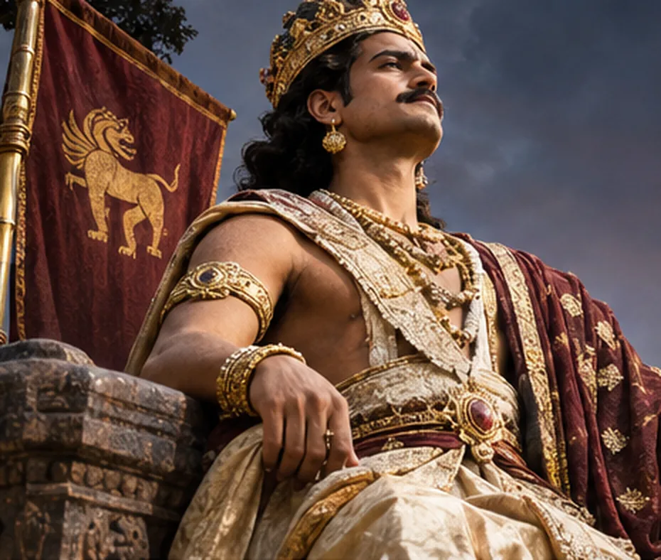
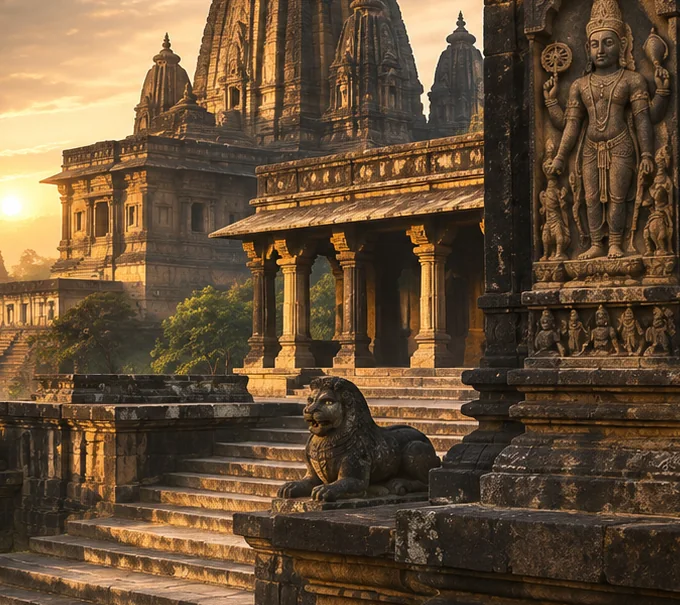

THE PAL
EMPIRE.
Four centuries of kingship.
One extraordinary civilisation.
From the rivers of Bengal to the courts of northern India: a commemorative chronicle of the sovereigns, sacred art, monumental places and lasting memory of the Pal dynasty.
Beyond the splendour
of a single reign.
Empires are often remembered for a conqueror. The Pal dynasty deserves to be remembered for an age.
Founded in Bengal in the eighth century, the royal house established enduring authority in Bengal and Bihar, and competed for political primacy across northern India. Its kings ruled, lost territory, returned to power and shaped a world of exceptional artistic and intellectual achievement.
In the bronzes of Shiva, in the carved forms of Vishnu, in copperplate charters and the monuments of the eastern Ganges plain, the civilisation of this age remains visible.
Read the imperial story ↗
One empire.
Many legacies.
Enter the royal succession, trace the landscapes of the dynasty, and encounter its extraordinary sacred and intellectual world.
The Sovereigns
Twenty-one names, one enduring royal house.

The Sacred World
The divine image in stone, bronze and architecture.

The Imperial Realm
From Varendra and Magadha to the contested city of Kannauj.

The Written Memory
The charters, poems and discoveries that recover the past.
The men who bore
the imperial crown.
A dynasty is not a solitary portrait. Its history is a succession of ambition, recovery, loyalty and change.
View the complete succession ↗
Gopal I
Chosen in a time of disorder, he established the house from which four centuries of imperial history would unfold.
Discover the storyDharmapal
The dynasty became a great northern Indian power under Dharmapal, whose ambition reached the court of Kannauj.
Discover the story
Devapal
Under Devapal the crown remained a first-rank power, and its reputation travelled beyond the subcontinent.
Discover the story
Ramapal
The sovereign who recovered Varendra and revived the prestige of the imperial house in its final great age.
Discover the storyRegnal dates are approximate. The numbering and even the existence of some late rulers are subjects of scholarly disagreement.
“A crown is more than a thing of gold.A COMMEMORATIVE REFLECTION · NOT A HISTORICAL QUOTATION
It is an idea carried through centuries.”

When stone
became sacred.
The Pal age produced some of the most distinguished images of Hindu divinity in eastern India.
Shiva with Uma. Vishnu attended by Lakshmi and Sarasvati. Great figures in dark stone, bronzes of extraordinary subtlety, and devotional forms made to be revered rather than simply observed.
The historic dynasty also supported major Buddhist centres of learning. Its true achievement is best understood in the fullness of this shared religious landscape.
Explore Dharma & Devotion ↗